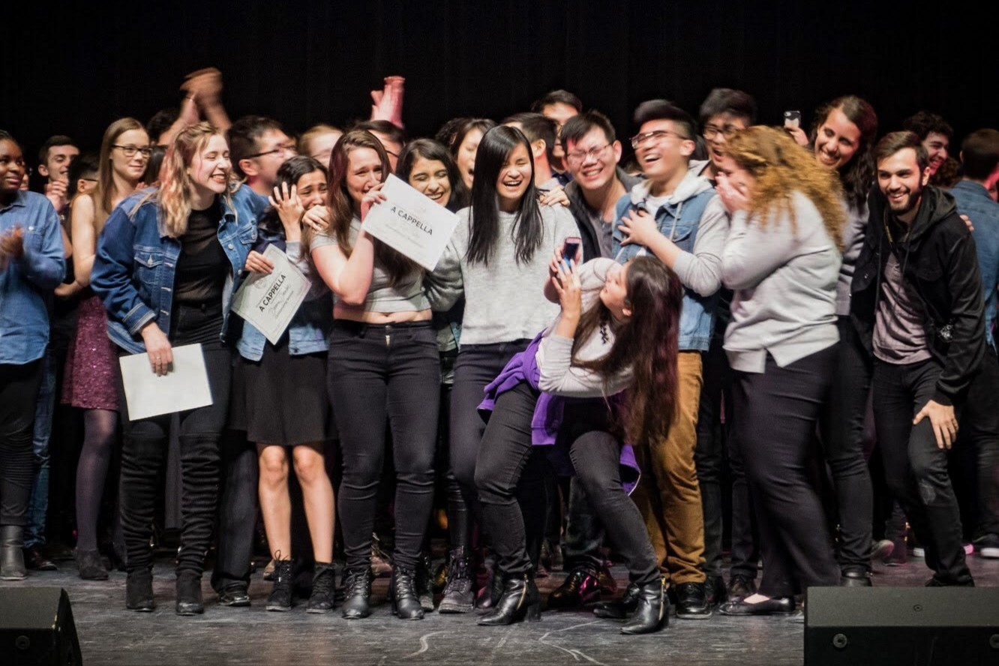

I joined collegiate a cappella in the Fall of 2018 and have since competed and won awards onstage in Waterloo, Toronto, and Buffalo.
I competed with a group called In Full Colour A Cappella at the International Championship of Collegiate A Cappella (ICCA) in 2019 and 2020, placing first at our Quarterfinal events both years. Pitch Perfect, the internationally-loved movie, is based on the ICCAs!
In my time at the University of Waterloo, I have joined five a cappella groups.
This past year I had the privilege of being a Musical Director for In Full Colour. I helped develop and arrange our competitive set, and I was the primary choreographer. We won five total awards, including first place, Outstanding Soloist, and Oustanding Vocal Percussion at our ICCA Quarterfinals, and second place and Audience Choice at the North Metro A Cappella Challenge.
Our set this year told the story of a parent-child relationship. You can watch it below:
Follow us: Youtube ↗ Instagram ↗ Facebook ↗